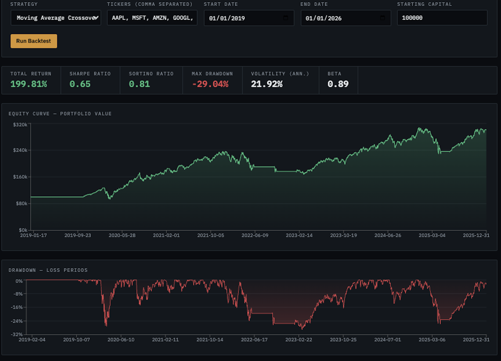
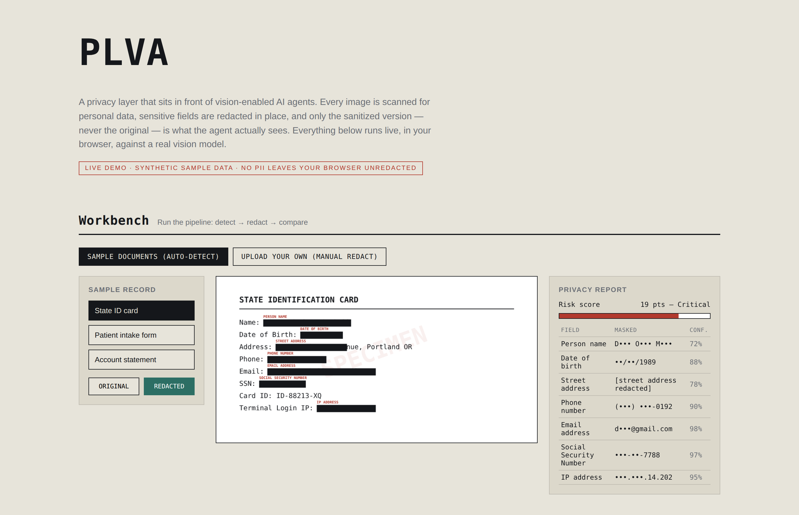
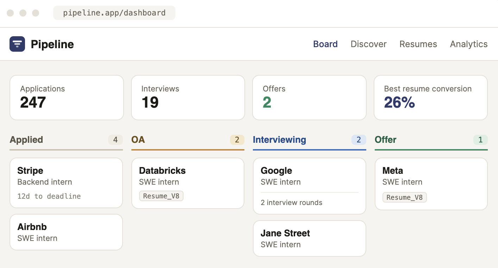

CS & Math @ UMass Amherst · AI/ML Intern @ Johns Hopkins APL.
I'm a Computer Science and Mathematics student at UMass Amherst focused on building intelligent systems that solve real problems. My work spans machine learning, software engineering, cybersecurity, and full-stack development, with projects ranging from privacy-preserving AI agents to large-scale platforms used by students and researchers.
I enjoy taking ideas from research papers and prototypes to production-ready tools. Whether I'm developing ML pipelines, designing web applications, or experimenting with emerging AI systems, I'm driven by creating technology that is both technically rigorous and genuinely useful.
Building multimodal ML pipelines integrating XLM-R, computer vision, and LLM workflows to detect AI-generated phishing and disinformation across 5+ languages.
Developed LTE/5G network forensic tooling processing 5,000+ PCAP captures to reconstruct signaling sessions and flag anomalies across NAS, RRC, and S1AP events.
Built AI Sense, an edge AI wildlife-deterrence system at 92% accuracy; optimized on-device inference for 3x real-time throughput on Raspberry Pi.
Built demand-forecasting models and automated reporting from pharmacy data — cut stock shortages 18%, improved planning efficiency 32%.
Developed and evaluated AI/ML models for real-time cybersecurity threat detection — anomaly detection, intrusion patterns, and adversarial behavior in dynamic network environments — using supervised and unsupervised learning to build robust, scalable defenses without sacrificing performance.
Researching how to schedule thousands of concurrent LLM inference requests across a GPU cluster to minimize latency while maximizing accelerator utilization — sitting at the intersection of distributed systems, OS-level scheduling, and AI infrastructure, an area every major inference-serving stack is actively racing to solve.
Add a screenshot or short GIF for each project — recruiters skim visuals before text.

Full-stack backtesting engine for equity strategies — order execution, cost modeling, and Monte Carlo validation across 1,000+ scenarios.

Real-time CV framework that detects and obfuscates faces, screens, and documents for autonomous visual agents.

Developed a full-stack platform used by 1,000+ students to streamline internship recruiting through application tracking, pipeline analytics, deadline management, and centralized career insights.